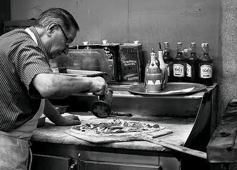
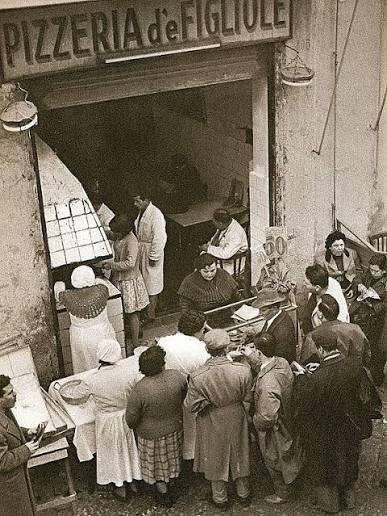

A pizza nasceu na cidade de Nápoles, na Itália, entre os séculos XVII e XVIII. Embora pães achatados com coberturas existissem na Antiguidade entre egípcios e gregos, foi na cidade napolitana que a massa ganhou molho de tomate e formato popular
Comida de rua: No início, a pizza era um prato simples e barato vendido por ambulantes para alimentar os trabalhadores mais humildes.

